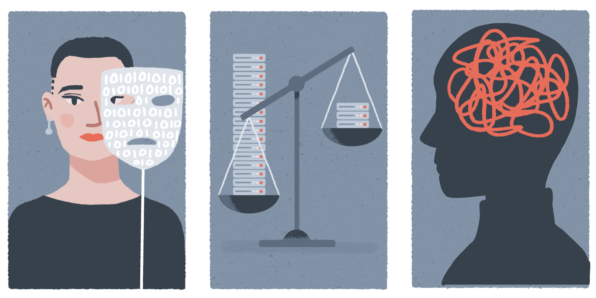

Bias Mitigation¶

Bias Self-assessment and Risk Management¶
By pinpointing risks of bias or downstream discriminations, project teams can streamline possible solutions in a proactive, pre-emptive, and anticipatory way. This is what fairness-aware design and implementation will enable the team to do.
At each stage of the AI project lifecycle, a collaborative Bias Self-assessment should be carried out with regard to the applicable dimension of fairness. This self-assessment consists of three steps:
Step 1: Familiarising with biases and fairness types that are relevant to each project stage.
Step 2: Reflecting and identifying how a particular AI project might be vulnerable to biases that may arise at each stage and pose risks to each relevant fairness type.
Step 3: Determine and document bias risk mitigation actions that will be implemented to correct any existing problems that have been identified, strengthen areas of weakness that have possible discriminatory consequences, and take proactive bias-prevention measures in areas that have been identified as potential sources of risk.
The Fairness Self-Assessment and Risk Mitigation template will help you go through this process. It locates a set of social, statistical, and cognitive biases within specific steps of an AI project lifecycle. These biases require ongoing reflection and deliberation to minimise the possible negative impact upon downstream activities or the risk of discriminatory outcomes.
List of Biases1¶
World biases¶
Historical bias: Historical bias concerns pre-existing societal patterns of discrimination and social injustice—and the prejudices and discriminatory attitudes that correspond to such patterns. These patterns, prejudices, and attitudes can be drawn into every stage of the AI innovation lifecycle and be perpetuated, reinforced, or exacerbated through inequitable innovation ecosystem dynamics and the pursuit of biased application choices and research agendas. They can also arise in AI innovation contexts when historical patterns of inequity or discrimination are inadvertently or unintentionally reproduced, or even augmented, in the development and use of an AI system—even when the system is functioning to a high standard of accuracy and reliability.[@mehrabi2019]-[@suresh2019] For instance, even with scientifically sound sampling and feature selection, a project will exhibit historical bias where it perpetuates (or exacerbates) socioeconomic inequalities through the outcomes it generates.
Structural racism: Structural racism (also sometimes called systemic racism) is a form of racial discrimination that is ‘not simply the result of private prejudices held by individuals, but is also produced and reproduced by laws, rules, and practices, sanctioned and even implemented by various levels of government, and embedded in the economic system as well as in cultural and societal norms’.[@bailey2021] Other forms of discrimination such as sexism, classism, ableism, ageism, antisemitism, and transphobia can also similarly have structural or systemic aspects.
Institutional bias: Institutional bias is ‘a tendency for the procedures and practices of particular institutions to operate in ways which result in certain social groups being advantaged or favoured and others being disadvantaged or devalued. This need not be the result of any conscious prejudice or discrimination but rather of the majority simply following existing rules or norms’.[@chandler2011]
Data biases¶
Representation bias: When a population is either inappropriately represented (e.g. not allowing sufficient self-representation in demographic variables) or a sub-group is underrepresented in the dataset, the model may subsequently fail to generalise and under-perform for a sub-group (or sub-groups).[@feng2022]-[mehrabi2019]-[@suresh2019] For example, representation bias could arise in a symptom-checking application that has been trained on a data collected exclusively through smartphone use or online interaction as this dataset would likely underrepresent groups within the general population like elderly people who may lack access to smartphones or connectivity.
Selection bias: Selection bias is a term used for a range of biases that affect the selection or inclusion of data points within a dataset. In general, this bias arises when an association is present between the variables being studied and additional factors that make it more likely that some data will be present in a dataset when compared to other possible data points in the space.[@mehrabi2019] For instance, where individuals differ in their geographic or socioeconomic access to an activity or service that is the site of data collection, this variation may result in their exclusion from the corresponding dataset. Likewise, where certain socioeconomically deprived or marginalised social groups are disproportionately dependent on a social service to fulfil basic needs, it may be oversampled if data is collected from the provision of that service.
Admission bias: Admission rate bias is a subtype of selection bias. It occurs when the exposure to a risk and the occurrence of a disease increases the likelihood of admission or referral (hence, this is also known as ‘referral bias’). As a result, the cases included in any subsequent study or dataset will systematically differ from the population at large.[@spencer2017]
Diagnostic decision bias: Diagnostic decision bias occurs in medical datasets that are based on implicit biases in clinical judgement about patient diagnosis (for instance, where biased medical training and unrepresentative or discriminatory clinical knowledge lead to the under-diagnosis of minority or under-served groups). This leads to ‘differential diagnosis of patients with the same pathology, on the basis of demographic features’ (Straw & Callison-Burch, 2020, p. 2) and, ultimately, datasets that reflect biased diagnoses rather than the true rate of disease.
Chronological bias: Chronological bias arises when individuals in the dataset are added at different times, and where this chronological difference results in individuals being subjected to different methods or criteria of data extraction based on the time their data were recorded. For instance, if the dataset used to build a predictive risk model in children’s social care spans over several years, large-scale care reforms, policy changes, adjustments in relevant statutes (such as changes to legal thresholds or definitions), and changes in data recording methods may create major inconsistencies in the data points extracted from person to person.
Diagnostic access bias: Where barriers to patient access exist for diagnostic tests, there can be systematic exclusion of sub-groups from a dataset, resulting in the under- or over-estimation of the true prevalence or incidence of the disease.[@banerjee2017] These barriers can exist for myriad reasons, including cultural (e.g. distrust of formal healthcare institutions), geographic (e.g. remote living), socioeconomic (e.g. unable to get time off from childcare or work), among other reasons.
Prevalence-incidence bias: Prevalence-incidence bias occurs as a result of the timing in which cases are included in the dataset for a study.[@spencer2017] For example, excluding patients who have died could result in the appearance of decreased severity for a disease. A longer timeframe between exposure and investigation could increase the likelihood of additional patients dying or recovering and being excluded from an analysis.
Data coding bias: Data coding bias occurs when the misrepresentation or erasure of demographic characteristics such as gender or ethnicity by biased coding systems obscures patient needs, adversely impacts patient’s access to appropriate screenings, diagnosis, and treatments, and, subsequently, prejudices the datasets in which biased coding is embedded.
Missing data bias: Missing data can cause a wide variety of issues within an AI project, and these data may be missing for a variety of reasons related to broader social factors. Missing data bias can lead to inaccurate inferences and affect the validity of the model where it is the result of non-random but statistically informative events.[@chen2021]-[@feng2022] For instance, missing data bias may arise in predictive risk models used in social care to detect potentially harmful behaviour in adolescents where interview responses and longitudinal data collected over extended periods of time are used as part of the dataset. This can be seen in cases where interview questions about socially stigmatised behaviours or traits like drug use or sexual orientation trigger fears of punishment, humiliation, or reproach and thus prompt non-responses, and in cases where data collection over time leads to the inconsistent involvement and drop-out of study participants.
Wrong sample-size bias: Using the wrong sample size for the study can lead to chance findings that fail to represent adequately the variability of the underlying data distribution, in the case of small samples, or findings that are statistically significant but not relevant or actionable, in the case of larger samples. Wrong sample size bias may occur in cases where model designers have included too many features in a machine learning algorithm. This is often referred to as the ‘curse of dimensionality’, a mathematical phenomenon wherein increases in the number of features or ‘data dimensions’ included in an algorithm means that exponentially more data points need to be sampled to enable good predictive or classificatory performance.
Measurement quality bias: Measurement quality bias arises when under-resourced clinical environments lack the personnel, expertise, training capacity, and digital maturity to consistently collect high quality & complete data. They can also occur during deployment when measurement tools & devices are designed for dominant groups and consequently mismeasure minoritised, disadvantaged, or underserved groups.
Design, development, and deployment biases¶
Hardware bias: Hardware bias arises where physically instantiated algorithmic systems or measurement devices are not designed to consider the diverse physiological needs of minoritised, marginalised, disadvantaged, or other non-majority stakeholders. When deployed, such systems will therefore perform less effectively for members of these groups due to their design.
Annotation bias: Annotation bias occurs when annotators incorporate their subjective perceptions into their annotations.[@chen2021]-[kuwatly2020] Data is often annotated by trained expert annotators or crowdsourced annotators. In its simplest form, annotators can choose an inaccurate label due to fatigue or lack of focus[@hovy2021] but annotation bias can also result from positionality limitations that derive from demographic features, such as age, education, or first language,[kuwatly2020] and other systemic cultural or societal biases that influence annotators.[@chen2021] For instance, annotators may label differently facial expressions of different ethnic, age, or gender groups,[@chen2021] have different levels of familiarity with communication norms,[@hovy2021] or different understandings of what should be annotated as harmful content.[@rottger2022] When the role of annotator subjectivity is unacknowledged or annotators are not specifically trained to mitigate biases, there are greater chances that the model will incorporate annotation biases and be unfair.[@chen2021]-[@rottger2022]
Label or label choice bias: A label (or target variable) used within an algorithmic model may not have the same meaning for all data subjects. There may be a discrepancy between what sense the designers are seeking to capture in a label, or what they are trying to measure in it, and the way that affected individuals understand its meaning.[@corbett-davies2018]-[@feng2022]-[@obermeyer2019]-[@rajkomar2018] Where there is this kind of variation in meaning for different groups within a population, adverse consequences and discriminatory impact could follow. For example, designers of a predictive model in public health may choose ‘patient wellbeing’ as their label, defining it in terms of disease prevalence and hospitalisation. However, subpopulations who suffer from health disparities and socioeconomic deprivation may understanding wellbeing more in terms of basic functionings, the food security needed for health promotion, and the absence of the social environmental stressors that contribute to the development of chronic medical conditions. Were this predictive model to be used to develop public health policy, members of this latter group could suffer from a further entrenchment of poor health outcomes.
Measurement bias: Measurement bias addresses the choice of how to measure the labels or features being used. It arises when the measurement scale or criteria being applied fails to capture data pertaining to the concepts or constructs that are being measured in a fair and equitable manner.[@jacobs2021]-[@mehrabi2019]-[@mitchell2021]-[olteanu2019]-[@suresh2019] For example, a recidivism risk model that uses prior arrests or arrested relatives as proxies to measure criminality may surface measurement bias insofar as patterns of arrest can reflect discriminatory tendencies to over-police certain protected social groups or biased assessments on the part of arresting officers rather than true criminality.
Cohort bias: Cohort bias is a subtype of measurement bias where model designers use categories that default ‘to traditional or easily measured groups without considering other potentially protected groups or levels of granularity (e.g. whether sex is recorded as male, female, or other or more granular categories)’.[@rajkomar2018]
Model selection bias: Model selection bias occurs when AI designers and developers choose a model that does not sufficiently respond to the needs and requirements of the research question or problem and the domain context or use-case. This may result not only in a lack of appropriate transparency and explainability (where a complex model is chosen and the context demands interpretable results) but also in outcomes based upon model inferences that do not reflect the level of nuance needed to confront the question or problem itself.
Evaluation bias: Evaluation bias occurs during model iteration and evaluation as a result (1) of the application of evaluative metrics that mask the differential performance of an AI model for subgroups or (2) of the use of benchmarking datasets that do not accurately represent the composition of the target population.[@suresh2019] For example, an evaluation bias may occur where performance metrics that measure only overall accuracy are applied to a trained computer vision system that performs differentially for subgroups that have different skin tones. Likewise, evaluation biases arise where the external benchmark datasets that are used to evaluate the performance of trained models are insufficiently representative of the populations to which they will be applied. In the case of computer vision, this may occur where established benchmarks overly represent a segment of the populations (such as adult light-skinned males) and thus reinforce the biased criteria for optimal performance.
Semantic bias: Semantic bias occurs when discriminatory inferences are allowed to arise in the architecture of a trained AI model and to remain an element of the productionalised system. When historical biases are baked into datasets in the form of discriminatory proxies or embedded prejudices (e.g. word embeddings that pick up on racial or gender biases), these biases can be semantically encoded in the model’s covariates and parameters.[@hovy2022] Semantic biases occur when model design and evaluation processes fail to detect and mitigate such discriminatory aspects.
Confounding: Confounding is a well-known causal concept in statistics, and commonly arises in observational studies. It refers to a distortion that arises when a (confounding) variable independently influences both the dependant and independent variables (e.g. exposure and outcome), leading to a spurious association and a skewed output. Clear examples of confounding can be found in the use of electronic health records (EHRs) that arise in clinical environments and healthcare processes. EHRs are observational data and often reflect not only the health status of patients, but also patients’ interactions with the healthcare system. This can introduce confounders such as the frequency of inpatient medical testing reflecting the busyness or labour shortages of medical staff rather than the progression of a disease during hospitalisation, differences between onset of a disease and the date of diagnosis, and health conditions that are missing from the EHRs of a patient due to a non-random lack of testing. Contextual awareness and domain knowledge are crucial elements for identifying and redressing confounders.
Social determinant blindness: Social determinant blindness occurs where clinical researchers and/or AI model designers act with a lack of awareness of the environmental, occupational, and life-course exposures of patients who face precarity, historical marginalisation, and discrimination. This leads to ‘a lack of data on the complete etiologic context and exposures of a patient’s health, including lack of opportunities and resources, such as broadband connectivity and social factors that can trigger adverse health outcomes’.[@dankwa-mullan2022]
Aggregation bias: Aggregation bias arises when a ‘one-size-fits-all’ approach is taken to the outputs of a trained algorithmic model (i.e. one where model results apply evenly to all members of the impacted population) even where variations in subgroup characteristics mean that mapping functions from inputs to outputs are not consistent across these subgroups.[@mehrabi2019]-[@suresh2019] In other words, in a model where aggregation bias is present, even when combinations of features affect members of different subgroups differently, the output of the system disregards the relevant variations in conditional distributions for the subgroups. This results in the loss of information, lowered performance, and, in cases where data from one subgroup is more prevalent than those of others, the development of a model that is more effective for that sub-group. Good examples of aggregation bias come up in clinical decision-support systems in medicine, where clinically significant variations between sexes and ethnicities—in terms of disease aetiology, expression, complications, and treatment—mean that systems which aggregate results by treating all data points similarly will not perform optimally for any subgroup.
Reporting bias: Reporting bias arises when systems are produced without transparently reported evidence of effectiveness across demographic categories or testing for differential performance across sensitive, protected, or intersectional subgroups. This deficit in equity-aware testing and reporting can lead system developers and users to disregard or to attempt to bypass public accountability for equity, fairness, and bias mitigation. This means that transparency and accountability measures that should be in place to ensure that there are no discriminatory harms resulting from the use of the system are obscured or deprioritised.
Population bias and training-serving skew: Population bias occurs when the demographics or characteristics of the cohort that comprises the training dataset differ from those of the original target population to whom the model is applied.[@mehrabi2019]-[@olteanu2019] For instance, a polygenic risk model that was trained primarily on data from a cohort of people of European ancestry in a country that has significant ethnic diversity is applied to people of non-European descent in that country and consequently performs worse for them. Another example arises in the social media research context where the demographic composition of internet platform users is skewed towards certain population subgroups and hence can differ from the studied target population.[@olteanu2019] Training-serving skew occurs, in a similar manner, when a model is deployed for individuals whose data is dissimilar to the dataset used to train, test, and validate the model.[@feng2022] This can occur, for instance, where a trained model is applied to a population in a geographical area different from where the original data was collected, or to the same population but at a time much later than when the training data was collected. In both cases, the trained model may fail to generalise because the new, out-of-sample inputs are being drawn from populations with different underlying distributions.
Race correction bias: Race correction bias arises when algorithmic systems, which are adjusted or corrected for race or ethnicity, guide clinical decisions in ways that may direct more attention, care, or resources to Caucasian patients or to patients from other advantaged ethnic groups than to members of racialised and minoritised groups.[@vyas2020] They can also lead to informed mistrust, reluctance, and care avoidance on the part of racialised and minoritised groups and thus to harmful health outcomes for them. It has been argued that race correction is not only an unreliable proxy for genetic and biological difference but also fails to surface the underlying social causes of health disparities.
Cause-effect bias: Cause-effect bias arises when users or implementers of decision-support systems, which generate inferences based upon statistical correlations, mistakenly assume that correlation implies causation without examining the validity of such an attribution.[@fazelpour2021]-[@mehrabi2019] For instance, a model for predicting pneumonia risk and hospital re-admission shows that patients with asthma have a lower risk of death than non-asthmatics, leading users to erroneously conclusion that having asthma is a protective factor in the risk scenario. However, a closer look at the model’s inferences demonstrates that the correlation of asthma to lower risk was attributable to the fact that patients in the cohort known to have asthma were, as a common practice, automatically triaged to the Intensive Care Unit as a precautionary measure, and this meant that they had a 50% reduction in mortality risk.[@caruana2015]
Implementation bias: Implementation bias refers to any bias that arises when a system is implemented or used in ways that were not intended by the designers or developers but, nevertheless, made more likely due to affordances of the system or its deployment. For example, a biometric identification system that is used by a public authority to assist in the detection of potential terrorist activity could be repurposed to target and monitor activists or political opponents.
Decision-automation bias: Decision-automation bias arises when users of automated decision-support systems become hampered in their critical judgment, rational agency, and situational awareness as a result of their faith in the efficacy of the system. This may lead to over-reliance or errors of omission, where implementers lose the capacity to identify and respond to the faults, errors, or deficiencies, which might arise over the course of the use of an automated system, because they become complacent and overly deferent to its directions and cues. Decision-automation bias may also lead to over-compliance or errors of commission where implementers defer to the perceived infallibility of the system and thereby become unable to detect problems emerging from its use for reason of a failure to hold the results against available information.
Automation-distrust bias: Automation-distrust bias arises when users of an automated decision-support system disregard its salient contributions to evidence-based reasoning either as a result of their distrust or scepticism about AI technologies in general or as a result of their over-prioritisation of the importance of prudence, common sense, and human expertise. An aversion to the non-human and amoral character of automated systems may also influence decision subjects’ hesitation to consult these technologies in high impact contexts such as healthcare, transportation, and law.
Dismissal bias: Dismissal bias is a ‘conscious or unconscious desensitisation to alerts that are systematically incorrect for a protected group (e.g. an early warning score for patients with sepsis). Alert fatigue is a form of this’.[@rajkomar2018]
Status quo bias: An affectively motivated preference for “the way things are currently”, which can prevent more innovative or effective processes or services being implemented. This bias is most acutely felt during the transition between projects, such as the choice to deprovision a system and begin a new project, in spite of deteriorating performance from the existing solution. Although this bias is often treated as a cognitive bias, we highlight it here as a social bias to draw attention to the broader social or institutional factors that in part determine the status quo.
Ecosystem biases¶
Ecosystem bias: Ecosystem bias occurs when economic, legal, cultural, and political structures or institutions—and the policies, norms, and procedures through which these structures and institution influence human action—steer AI research and innovation agendas in ways that generate inequitable outcomes for minoritised, marginalised, vulnerable, historically discriminated against, or disadvantaged social groups.[@schwartz] Ecosystem biases, which exist in the wider social system wherein AI technologies are designed and used, may originate in and further entrench asymmetrical power structures, unfair market dynamics, and skewed research funding schemes that favour or bring disproportionate benefit to those in the majority, or those who wield disproportionate power in society, at the cost of those who are disparately impacted by the discriminatory outcomes of the design, development, and use of AI technologies.
Privilege bias: Privilege bias occurs when health policies, institutions, and infrastructures skew the benefits of healthcare technologies and medical devices disproportionately towards privileged social groups. ‘Models may be unavailable in settings where protected groups receive care or require technology/sensors disproportionately available to the nonprotected class’.[@rajkomar2018]
Research bias: Research bias occurs where there is a deficit in social and health equity standards to guide how AI research and innovation is funded, conducted, reviewed, published, and disseminated. It can also manifest in a lack of inclusion and diversity on research teams and in clinical trials, and limited studies incorporating representative real-world data for health insights.[@dankwa-mullan2022] Research bias additionally includes inequitable manifestations of funding structures or in incentives set by investors or funding institutions.
Allocation discrepancy: Allocation discrepancy occurs when resources (such as extra clinical attention or social services) are withheld from a protected group because it is associated with fewer positive predictions.[@rajkomar2018]
Optimism bias: Also known as the planning fallacy, optimism bias can lead project teams to under-estimate the amount of time required to implement a new system or plan adequately. In the context of the project lifecycle, this bias may arise during project planning, but can create downstream issues when implementing a model during the model productionalisation stage, due to a failure to recognise possible system engineering barriers.
Law of the instrument (Maslow’s hammer): This bias is best captured by the popular phrase ‘If all you have is a hammer, everything looks like a nail’. The phrase cautions against over-reliance on a particular tool or method, often one that is familiar to members of the project team. For example, a project team that is composed of experts in a specific ML technique may over-use that technique and mis-apply it in a context where a different technique would be better suited, or where it would be better not to use ML/AI technology at all.
McNamara fallacy: McNamara fallacy describes the belief that quantitative information is more valuable than other information.[@schwartz2022] This can lead to scientistic reductivism,[@leslie2022] technochauvinism,[@broussard2018] or technological solutionism.[@morozov2013] The McNamara fallacy plays a significant role in biasing AI innovation processes when AI researchers, designers, and developers view algorithmic techniques and statistical insights as the only inputs capable of solving societal problems, thereby actively disregarding interdisciplinary understandings of the subtle historical and sociocultural contexts of inequity and discrimination.
Informed mistrust: Informed mistrust occurs where, ‘given historical exploitation and unethical practices, protected groups may believe that a model is biased against them. These patients may avoid seeking care from clinicians or systems that use the model or deliberately omit information. The protected group may be harmed by not receiving appropriate care’.[@rajkomar2018]
De-agentification bias: De-agentification bias occurs when social structures and innovation practices systemically exclude minoritised, marginalised, vulnerable, historically discriminated against, or disadvantaged social groups from participating or providing input in AI innovation ecosystems. ‘Protected groups may not have input into the development, use, and evaluation of models. They may not have the resources, education, or political influence to detect biases, protest, and force correction’.[@rajkomar2018]
Feedback loops: Feedback loops occur where ‘the clinician accepts the recommendation of a model even when it is incorrect to do so, [and therefore] the model's recommended versus administered treatments will always match. The next time the model is trained, it will learn to continue these mistakes’.[@rajkomar2018]
Positive results bias: Positive results bias, also known as publication bias, refers to the system-wide or social phenomenon of observing a skewed level of positive results published in journals, because negative or null results tend to go unpublished.[@pluddeman2017] The consequence of this can be the overestimation of efficacy for specific techniques or methods, as well as research duplication since other research teams might attempt to repeat studies that have already been performed but not published. An example of this was observed in the well-known 'reproducibility crisis' that affected the social psychology literature.
Biases of rhetoric or spin: Biases of rhetoric or spin occur during the communication of research or development (e.g. model performance) and refer to the use of unjustified or illegitimate forms of persuasive language that lacks meaningful content or substantive evidence.[@heneghan2017] These biases relate to overemphasis of the performance or efficacy of a technique or intervention (e.g. showing comparative preference for the favoured technique to the detriment of alternatives).
Cognition biases¶
Status quo bias: Status quo bias is an affectively motivated preference for “the way things are currently”, which can prevent more innovative or effective processes or services being implemented. This bias is most acutely felt during the transition period between projects, such as the choice not to deprovision a system and begin a new project, despite deteriorating performance from the existing solution. Although this bias is often treated as a cognitive bias, we also highlight it here as a social bias to draw attention to the broader social or institutional factors that in part determine the status quo.
Confirmation bias: Confirmation bias arises from the tendency to search for, gather, or use information that confirms pre-existing ideas and beliefs, and to dismiss or downplay the significance of information that disconfirms one’s favoured hypothesis. This can be the result of motivated reasoning or sub-conscious attitudes, which in turn may lead to prejudicial judgements that are not based on reasoned evidence. For example, confirmation biases could surface in the judgment of the user of an AI decision-support application, who believes in following common sense intuitions acquired through professional experience rather than the outputs of an algorithmic model and, for this reason, dismisses its recommendations regardless of their rational persuasiveness or veracity.
Self-assessment bias: A tendency to evaluate one’s abilities in more favourable terms than others, or to be more critical of others than oneself. In the context of a project team, this could include the overly positive assessment the group’s abilities (e.g. through reinforcing groupthink). For instance, during project planning, a project team may believe that their resources and capabilities are sufficient for the objective of the project, but in fact be forced to either cut corners or deliver a sub-par product.
Availability bias: The tendency to make judgements or decisions based on the information that is most readily available (e.g. more easily recalled). When this information is recalled on multiple occasions, the bias can be reinforced through repetition—known as a 'cascade'. This bias can cause issues for project teams throughout the project lifecycle where decisions are influenced by available or oft-repeated information (e.g. hypothesis testing during data analysis).
Naïve realism: A disposition to perceive the world in objective terms that can inhibit recognition of socially constructed categories. For instance, treating ‘employability’ something that is objectively measurable and, therefore, able to be predicted by a machine learning algorithm based on objective factors (e.g. exam grades, educational attainment).
-
Some of the biases in this list are specific to health care systems, bust most are widely applicable. They are taken from CITE. ↩